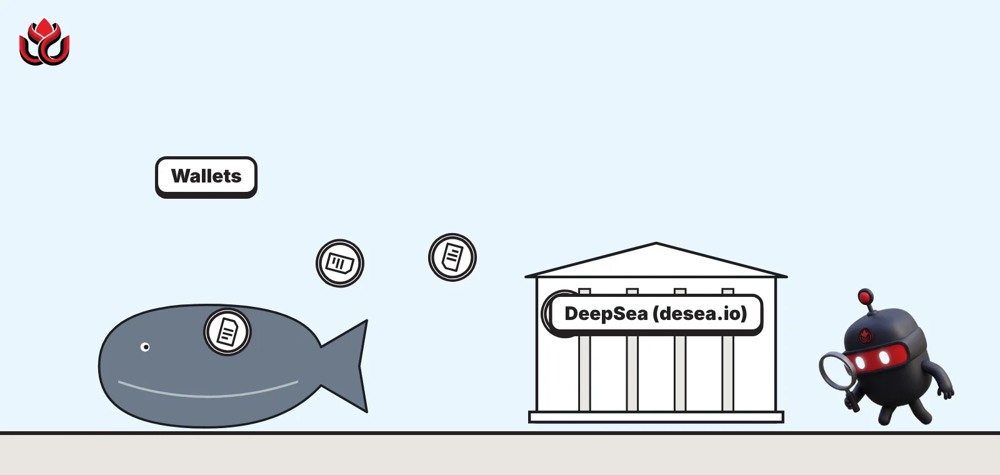
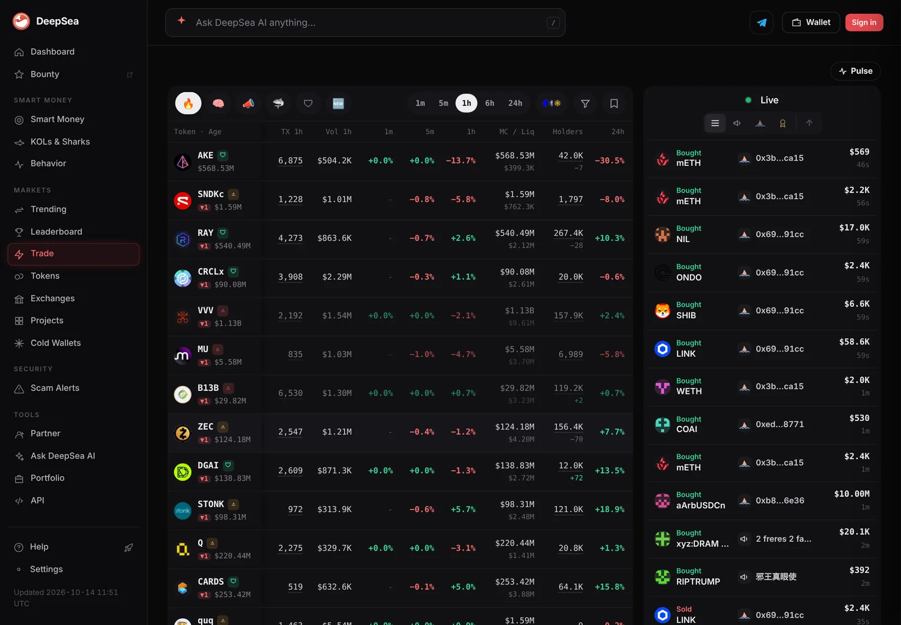
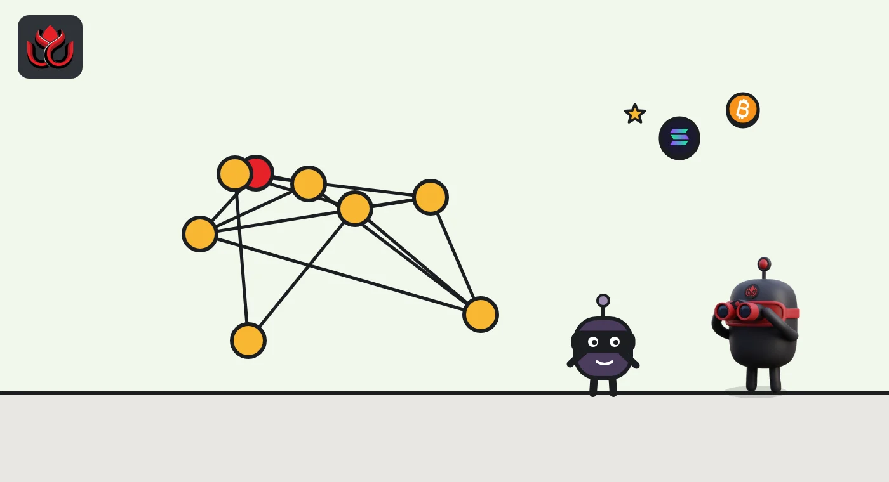
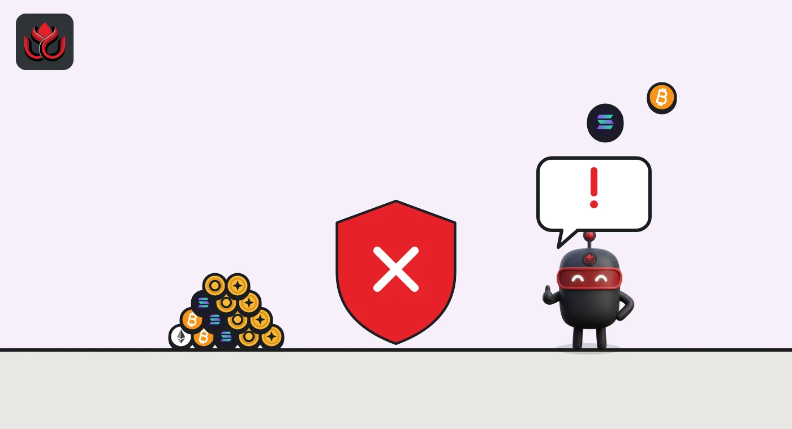

What is DeepSea (desea.io)? The onchain app that labels wallets and tracks flows
DeepSea (desea.io) is a web app that labels crypto wallets and tracks what smart money, influencers, whales, exchanges and hackers do onchain. It is run by DeepTek Ltd, and its own terms say the data is information only, not financial advice.

Key points
- DeepSea is an onchain analytics web app operated by DeepTek Ltd, under the laws of England and Wales.
- Its public sections track smart money, KOL (influencer) wallets, sharks and whales, scam signals, hacks, exchange flows and perps positioning.
- It also offers in-app trading from a user's own wallet and a paid data API.
- DeepSea says its data may be incomplete, delayed or wrong, and that its risk labels are estimates. LC Insight cites DeepSea data in some articles.
 What DeepSea's data shows
What DeepSea's data shows
A quick tour of DeepSea on the morning of November 2 shows what each section holds. The Scam Alerts page listed five recent incidents, led by the Binance hot wallet theft. DeepSea's $3.40 billion figure tracks only the funds taken on Ethereum; Binance put the total loss at about $6.3 billion in its Recovery Update #2. The page also lists flagged addresses, including more than 11,000 tied to ransomware and 5,000 to phishing.
The Exchanges page tracks labeled exchange wallets and their seven-day flows; it counted 391 Binance wallets on 17 chains holding $144.40 billion. The Long / Short tab covers 150 assets, and the Smart Money page says DeepSea has labeled more than 4 million wallets with 34 labels.
Token pages pull this together, with price, market cap, top holders, seven-day whale and exchange flows and derivatives positioning. Figures change constantly, and some differ from CoinGecko or CoinMarketCap, so check the time and compare before relying on them.

Data: DeepSea (desea.io), checked November 2, 2026, 7:59 a.m. ET.
What is DeepSea?
DeepSea, at desea.io, describes itself as AI onchain intelligence for crypto investors. It reads public blockchain data, labels wallets (for example as a known trader, an influencer or an exchange) and turns their activity into tables, rankings and alerts. Its stated aim is to help people spot scam projects and scam wallets and to follow what large or successful traders do before making their own decisions.
The site is run by DeepTek Ltd. Its terms of use are governed by the laws of England and Wales and describe DeepSea as software, not a broker, exchange, bank, custodian or investment adviser.
Disclosure: LC Insight uses DeepSea figures in some of its articles, shown in a separate box with a link and a time checked.
What are DeepSea's public sections?
The homepage is a JavaScript app. Its plain-text summary says sections are reached through links on the homepage. The main ones:
- Trending tokens and trading (#trading): tokens that tracked KOLs and sharks are buying, plus trading.
- KOLs (#kols): onchain wallets linked to crypto influencers, including Asian KOLs, with trades, profit and loss (PnL) and win rate.
- Smart money (#smart): profitable wallets ranked by PnL over 7, 30, 90 and 180 days.
- Sharks (#sharks): large holders and big traders.
- Scam alerts (#scams): token risk signals and labeled scam wallets.
- Hacks (#hacks): funds stolen in hacks and exploits, and whether they reach exchanges.
- Exchanges (#exchanges): exchange wallet balances and flows.
- Perps long/short (#perps): positioning in perpetual futures, contracts that track a price with no expiry date.
The homepage also lists sections for wallet behavior, projects, live trades, a trader leaderboard, calls, API plans and help, without describing them.
It also shows a live snapshot of tokens that tracked KOLs and sharks bought in the last hour, with featured KOL wallets. The site says this snapshot changes often, so any figure read from it should carry the time it was checked.

How does DeepSea build its data?
DeepSea's documentation explains some of its methods:
- Smart money tiers use portfolio size, 90-day realized PnL and a 55% win rate, and are recomputed daily. PnL uses a first-in, first-out cost basis with USD prices at each trade's block.
- KOL wallets are linked to public influencers and ranked by what the wallets did, including a "dump rate" (positions sold within 24 hours). KOL call matching is in beta.
- Exchange flows are daily deposits and withdrawals per exchange, and DeepSea's exchange dataset labels hot, cold and deposit wallets.
- Perps data covers Hyperliquid only.
- Hacks data lists tracked hack wallets, hops and fund moves. The docs do not explain how often it updates.
The docs list Base, Ethereum, BNB Chain, Solana and Hyperliquid as covered chains. The separate Data API page names Tron and several other networks beyond those five, and the docs give a different chain list for lending data, so coverage differs by feature.
Can you trade on DeepSea?
Yes. DeepSea's site summary says users can trade tokens from their own wallet across seven networks; its terms name Solana, Base, BNB Chain and Ethereum as examples. Its terms say a wallet infrastructure provider stores keys for wallets created in the app (a connected outside wallet keeps its own keys), users can export the private key, and every trade must be signed by the user. DeepSea says it never moves funds without the user's signature and cannot recover funds sent to a wrong address.
The terms list swap fees of 0.75% on Solana and 0.90% on EVM chains, or 0.60% and 0.75% through an invite link, plus network gas. Limit, take-profit and stop-loss orders are reminders the user confirms and signs. A copy-trading feature suggests trades when a followed wallet moves, and each one still needs the user's confirmation. The AI assistant can also prepare swap orders on request, which the user must review and sign.

What does DeepSea's scam and risk checking look at?
DeepSea's site summary lists the token risk signals it checks: holder concentration, bundled supply (tokens bought in a cluster of wallets at launch), snipers, bots, liquidity and developer wallet moves. It also keeps a list of labeled scam wallets.
Beyond the web app, DeepSea sells data. The Data API page describes labeled wallets for smart money, KOLs, sharks and whales, net flow and accumulation signals, scam clusters, daily alerts and a real-time trade stream, and says DeepSea has collected more than 3 billion wallet addresses and analyzed more than 1 billion. Those are the company's own figures. The docs also list recurring reports, including Smart Money, Fund Flow, Asia KOL Behavior and Scam Watch, and labeled wallet datasets, with free samples for some products.
An AI chat feature answers plain-English questions about tokens, wallets, KOLs and flows from DeepSea's data. The site says its data and AI answers are for information only, not financial advice.
Is DeepSea free?
Partly. The docs list a Free plan with a limited number of AI chat questions per day and limited rows per table, more with a free account. Paid tiers include Pro, API and Enterprise plans, and the docs also sell labeled wallet datasets and recurring reports.
The plan details are not consistent across pages. The docs pricing tab, the docs API tab and the Data API page give different call limits for some plans, and the Data API page lists an "API Plus" plan the docs pricing tab does not show. Readers should check the current pricing page before relying on any figure.
What are the limits of DeepSea's data?
DeepSea's own terms are frank. They say everything in the service, including rankings, risk labels, AI answers and trader theses, is general information and not a recommendation to buy, sell or hold. Data may be incomplete, delayed or wrong, and risk labels can miss scams or flag safe projects.
Wallet labels are the biggest judgment call. A wallet tagged as an influencer or smart money is DeepSea's attribution, not a confirmed identity, and a profitable past does not predict future trades. LC Insight's piece on reading DeepSea's risk signals shows how a high score can sit next to warning signs.
LC Insight analysis
This section is our reading of the facts above, not a statement of fact.
- DeepSea is most useful for seeing flows that are hard to follow on a block explorer, such as hacked funds moving toward exchanges. Those flows are onchain facts, even when the labels around them are estimates.
- Treat influencer and smart money labels with care. They are one company's attributions, so any big claim built on them should be checked against the underlying transactions.
- Mismatched plan details across DeepSea's own pages are a small sign of a product that changes fast. Check the terms and pricing on the day you use it.
What's next
- Whether DeepSea aligns plan details across its pages
- Coverage of more chains in the analytics sections
- How KOL call matching works once it leaves beta
Frequently asked questions
Who owns desea.io?
The site says DeepSea is operated by DeepTek Ltd. Its terms are governed by the laws of England and Wales.
Does DeepSea hold user funds?
DeepSea says it is not a custodian. Keys for in-app wallets are stored by a wallet infrastructure provider, users can export them, and every trade must be signed by the user.
Which blockchains does DeepSea cover?
DeepSea says trading works across seven networks, with Solana, Base, BNB Chain and Ethereum named in its terms. The analytics docs list Base, Ethereum, BNB Chain, Solana and Hyperliquid as core chains, while the Data API page names more, including Tron.
Is DeepSea data financial advice?
No. DeepSea's terms say its content is general information, not financial, investment, legal or tax advice.
Disclaimer. This article is based on public information and the sources listed below as of the update time shown. It is for information only and is not investment, legal or tax advice. Figures may change as companies and authorities publish new data.